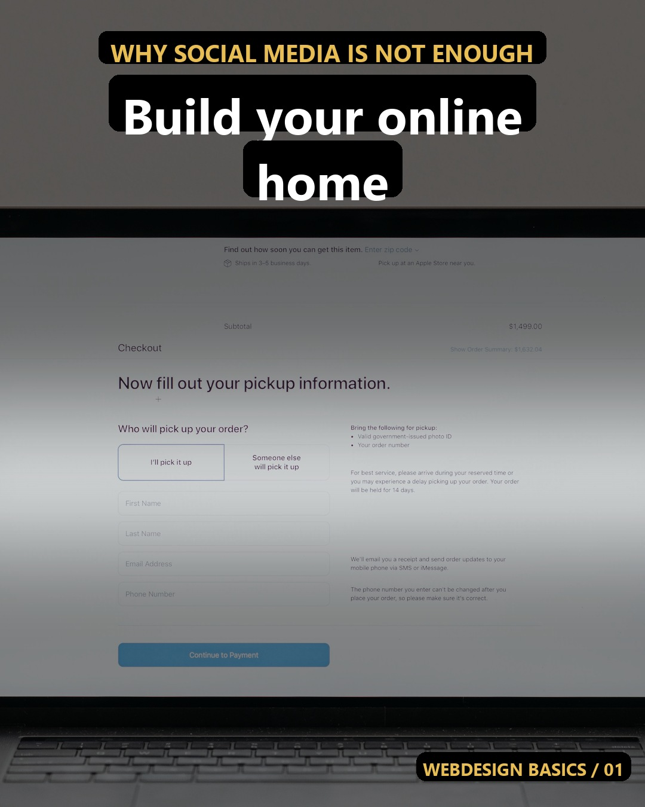
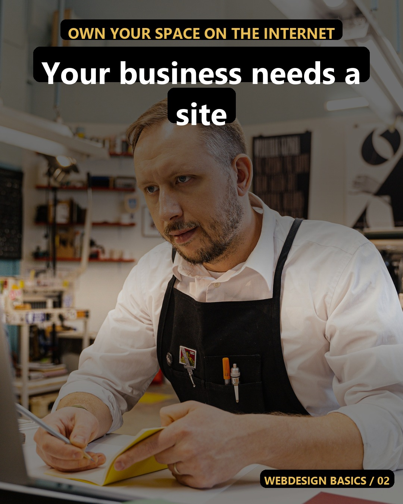
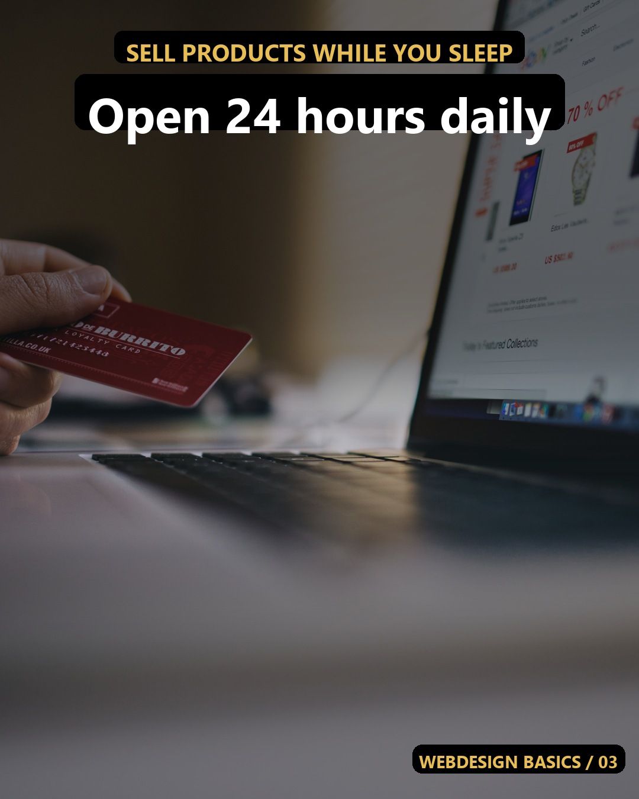

insta-webdesign - 2026-09-26Post 1
Why social media is not enough
Social apps can change their rules every day. A website is your own home on the internet. People can find you easily when they want to buy. What do you sell online? 💻
#webdesign #smallbusiness #onlinebusiness #websitedesign #entrepreneur #businessowner #sellonline #digitalmarketing #shoplocal #growth
Post 2
Own your space on the internet
When you use only a social page, you do not own your list of buyers. A real website keeps your products safe and open 24 hours. Buyers trust a clear business site much more. Do you have a domain name yet? 🌐
#webdesign #business #website #sellmore #store #startup #branding #ecommerce #success #design
Post 3
Sell products while you sleep
People look for goods at night and on weekends. A good website lets them buy items without talking to you first. This makes selling very simple for everyone. What is your favorite product to sell? ✨
#webdesign #selling #ecommerce #shopsmall #businesstips #online #products #worksmart #market #storefront
Reel 1Stop losing sales on social media
Selling in chat messages takes too much time. A clean website lets customers buy in one minute. Are you ready to build your first web page?
#webdesign #smallbusiness #sellonline #entrepreneur #website #store #digital #business #growth #tips
Reel 2Why your business needs a website
Make it easy for new buyers to find your shop. A real website builds instant trust with your audience. What is stopping you from starting a site?
#webdesign #onlinebusiness #websitedesign #shoplocal #branding #success #market #startup #products #design
Reel 3The best place to sell products
Control your own sales without fighting social media algorithms. A simple page brings in steady money every week. Do you want to learn how to make one?
#webdesign #ecommerce #businesstips #selling #online #storefront #worksmart #businessowner #goals #web